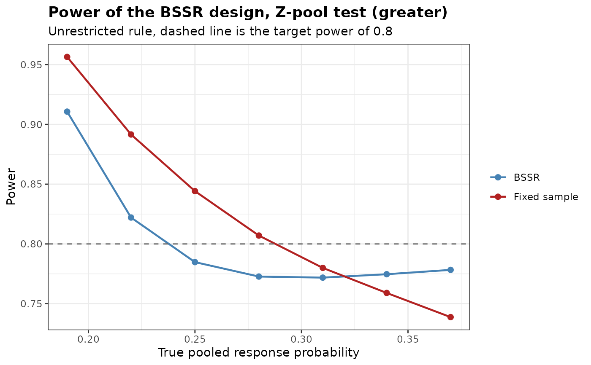

Power of a Blinded Sample Size Re-estimation Design for Binary Endpoints
Source:R/BinaryPowerBSSR.R
BinaryPowerBSSR.RdCalculates the power of a two-arm trial with a binary endpoint when blinded sample size
re-estimation (BSSR) is implemented, together with the power of the corresponding
fixed-sample design, the expected final sample size and its distribution. Seven tests
are supported (see BinaryRR), each of which can be applied with a
one-sided or a two-sided alternative, under either a restricted or an unrestricted design
rule.
Usage
BinaryPowerBSSR(
p,
Delta.A,
Delta.T,
N1,
N2,
omega = NULL,
r,
alpha,
tar.power,
Test,
restricted = FALSE,
alternative = c("greater", "less", "two.sided"),
tsmethod = c("minlike", "central", "blaker"),
n.grid = 100,
bb.gamma = 0,
effect = c("RD", "RR", "OR"),
ss.method = c("exact", "standard", "null.variance", "alternative.variance"),
ss.Test = Test,
ss.alpha = alpha,
rounding = c("group", "friede-kieser", "total", "nearest"),
search = c("crossing", "smallest", "stable"),
search.limit = c(2, 50),
N.min = NULL,
N.max = NULL,
n.interim = NULL,
margin = 0,
ref.pvalue = FALSE,
margin.scale = c("RD", "RR")
)Arguments
- p
Vector of true pooled proportions of responders from both groups
- Delta.A
Assumed treatment effect, on the scale given by
effect, used to split the blinded pooled proportion into group-specific proportions- Delta.T
True treatment effect, on the scale given by
effect- N1
Initial sample size of group 1
- N2
Initial sample size of group 2
- omega
Fraction of the initial sample size observed at the interim analysis. The interim size of group 2 is
ceiling(omega N2)and that of group 1 isceiling(r ceiling(omega N2)), so the interim analysis keeps the allocation ratio. Eitheromegaorn.interimmust be supplied- r
Allocation ratio to group 1
- alpha
Level of significance of the final analysis, for the alternative specified by
alternative- tar.power
Target power
- Test
Type of statistical test of the final analysis. Options:
'Chisq','Fisher','Fisher-midP','Z-pool','Boschloo','Blackwelder'or'Farrington-Manning'- restricted
Logical. If
TRUE, the re-estimated sample size is not allowed to fall below the initial sample size. Default isFALSE- alternative
Direction of the alternative hypothesis. Options:
'greater'(default),'less'or'two.sided'- tsmethod
Convention used to construct the two-sided version of the conditional tests, see
BinaryRR. Options:'minlike'(default),'central'or'blaker'- n.grid
Number of grid points used to search over the nuisance parameter of the unconditional tests. Default is 100
- bb.gamma
Confidence level parameter of the Berger-Boos procedure. The default of 0 disables the procedure
- effect
Scale of
Delta.AandDelta.T. Options:'RD'(default) for the risk differencep1 - p2,'RR'for the risk ratiop1 / p2or'OR'for the odds ratio- ss.method
How the sample size is re-estimated from the recovered proportions. Options:
'exact'(default),'standard','null.variance'or'alternative.variance', as inBinarySampleSize- ss.Test
Test whose exact power is used for the re-estimation when
ss.method = 'exact'. Default isTest- ss.alpha
Level of significance used for the re-estimation. Default is
alpha- rounding
How the re-estimated sample size is turned into whole numbers. Options:
'group'(default),'friede-kieser','total'or'nearest'. Only'group'is available withss.method = 'exact'. See Details- search
How the exact re-estimation chooses the sample size when
ss.method = 'exact':'crossing'(default),'smallest'or'stable', as inBinarySampleSize. Ignored by the other methods- search.limit
Limit of the size of group 2 examined by
search = 'stable', as inBinarySampleSize. Default isc(2, 50)- N.min
Lower bound on the final total sample size, or
NULL(default) for none beyond the interim total. It can be used to keep the patients who are already enrolled but not yet evaluated at the interim analysis- N.max
Upper bound on the final total sample size, or
NULL(default) for none- n.interim
Interim sample sizes of group 1 and group 2, as a vector of length two. An alternative to
omega- margin
Non-inferiority margin, on the scale given by
margin.scale. On the scale of the risk difference the default of 0 gives a test of superiority, and a value other than 0 tests the null hypothesisp1 - p2 <= -marginagainstp1 - p2 > -marginwhenalternativeis'greater', andp1 - p2 >= marginagainstp1 - p2 < marginwhen it is'less'. A negative value tests for superiority by more than its absolute value. On the scale of the risk ratio the margin is a positive ratioR0, and the null hypothesis isp1 / p2 <= R0againstp1 / p2 > R0whenalternativeis'greater', andp1 / p2 >= R0againstp1 / p2 < R0when it is'less'. A margin other than 0, and any margin on the scale of the risk ratio, requiresTest = 'Blackwelder'or'Farrington-Manning'and a one-sided alternative, seeBinaryRR. With a margin other than 0 on the scale of the risk difference the assumed and the true effects are risk differences (effect = 'RD'), and with a margin on the scale of the risk ratio they are risk ratios (effect = 'RR')- ref.pvalue
Logical. If
TRUE, the maximization over the nuisance parameter of the unconditional tests is refined between the grid points, seeBinaryRR. Default isFALSE. It applies to the final analysis, to the fixed-sample comparator and to the exact re-estimation- margin.scale
Scale of
margin. Options:'RD'(default) for the risk differencep1 - p2or'RR'for the risk ratiop1 / p2
Value
An object of class bbssr_powerbssr, a data frame with one row per element
of p containing:
- p1
True probability of responders for group 1
- p2
True probability of responders for group 2
- p
True pooled probability of responders from both groups
- power.BSSR
Power of the BSSR design
- power.TRAD
Power of the fixed-sample design
- E.N
Expected total sample size of the BSSR design
The interim sample sizes are stored as the attributes n1.interim and
n2.interim. The attribute reestimation holds, for every pooled number of
interim responders s, the recovered proportions, the final sample sizes and, in
the column N2.limit, the limit of search = 'stable' (otherwise
NA). The attribute N.dist holds the distribution of the final sample
size for every row of the result, identified by the column scenario, and the
attribute search the search. summary() reports the standard deviation
and quantiles of the final sample size.
Details
At the interim analysis the pooled number of responders is observed without unblinding.
The pooled proportion is combined with the assumed treatment effect Delta.A to
recover group-specific proportions, from which the sample size is re-estimated. For the
risk difference the recovered proportions are hat.p + Delta.A / (1 + r) and
hat.p - r Delta.A / (1 + r). For the risk ratio they are the proportions with
the pooled value hat.p and the ratio Delta.A, formula (21.11) of Kieser
(2020), and for the odds ratio they are obtained from the quadratic equation that the
odds ratio and the pooled value define. The exact search of
ss.method = 'exact' uses the recovered proportions truncated to the unit
interval. The normal approximation uses them before truncation, with each Bernoulli
variance truncated at zero, so that the assumed effect is kept as in formula (2) of
Friede and Kieser (2004). The power is then averaged over the distribution of the
interim outcome.
Under rounding = 'group', both the interim and the final sample size of group 1
are obtained from the size of group 2 by a single application of
ceiling(r ...), so the allocation ratio is preserved as closely as whole numbers
allow and is exact whenever r is a whole number. Under
rounding = 'friede-kieser', which requires a normal approximation, that is an
ss.method other than 'exact', the second stage receives the rounded-up
excess of the unrounded re-estimated total over the interim total, split into
ceiling(n / (1 + r)) and ceiling(r n / (1 + r)) patients as in Friede and
Kieser (2004). Under rounding = 'total' the unrounded total is rounded up and
group 2 receives floor(N / (1 + r)) patients. Under rounding = 'nearest'
the unrounded total is split in the ratio r to 1 and each group is rounded to
the nearest whole number, which reproduces the computations of Friede et al. (2007).
In each case the final total is kept between the interim total (or N.min, or
the initial total under the restricted rule) and N.max, except that
'friede-kieser' and 'nearest' round the two groups separately and can
exceed N.max by one patient. The argument
N1 enters only through the
fixed-sample comparator and the restricted rule, and under rounding = 'group' a
warning is issued when it is not ceiling(r N2).
Recovered proportions that coincide admit no sample size. The risk ratio produces them when no interim patient responds, and the odds ratio when no interim patient or every interim patient responds. The initial sample size is kept for such interim outcomes.
Setting Delta.T to the null value (0 for the risk difference, 1 for a ratio)
makes the two groups identical, so power.BSSR and power.TRAD become
rejection probabilities under the null hypothesis. BinaryTypeIErrorBSSR
evaluates them over the unit interval and locates the maximum.
With a non-inferiority margin, the design of Friede et al. (2007) is obtained.
The assumed effect Delta.A is usually 0, which recovers the pooled proportion
for both groups, the sample size is re-estimated by the formula of Farrington and
Manning (ss.method = 'standard') or of Blackwelder
(ss.method = 'alternative.variance'), and Delta.T = -margin (or
margin for alternative = 'less') gives the rejection probability on the
boundary of the null hypothesis.
With margin.scale = 'RR' the margin is a ratio R0 and the effects are
risk ratios (effect = 'RR'). The assumed effect Delta.A must exceed
R0 for alternative = 'greater' and fall below it for 'less', and
is usually 1. The sample size is re-estimated by formula (8) of Farrington and Manning
(1990) (ss.method = 'standard') or by their Method 1
(ss.method = 'alternative.variance'), and Delta.T = R0 gives the
rejection probability on the boundary of the null hypothesis. The recovered
proportions lie on that boundary only when no interim patient responds, and the
initial sample size is kept for this interim outcome.
References
Friede T, Kieser M (2004). Sample size recalculation for binary data in internal pilot study designs. Pharmaceutical Statistics, 3(4), 269-279.
Kieser M (2020). Methods and Applications of Sample Size Calculation and Recalculation in Clinical Trials. Springer, Cham.
Friede T, Mitchell C, Mueller-Velten G (2007). Blinded sample size reestimation in non-inferiority trials with binary endpoints. Biometrical Journal, 49(6), 903-916.
Author
Gosuke Homma (my.name.is.gosuke@gmail.com)
Examples
# Small BSSR calculation with the chi-squared test
BinaryPowerBSSR(
p = 0.45,
Delta.A = 0.3, Delta.T = 0.3,
N1 = 5, N2 = 5, omega = 0.5, r = 1,
alpha = 0.025, tar.power = 0.8, Test = 'Chisq'
)
#> Blinded sample size re-estimation for a binary endpoint
#>
#> Test : Chisq
#> Alternative : greater
#> Design rule : unrestricted
#> Initial size : N1 = 5, N2 = 5
#> Interim fraction: 0.5, giving n1 = 3 and n2 = 3
#> Treatment effect: assumed 0.3, true 0.3 (risk difference)
#> Re-estimation : exact power of Chisq at level 0.025
#> Alpha : 0.025, target power 0.8
#>
#> p p1 p2 power.BSSR power.TRAD E.N
#> 0.45 0.6 0.3 0.719 0.1667 73.3
# \donttest{
res <- BinaryPowerBSSR(
p = seq(0.19, 0.37, by = 0.03),
Delta.A = 0.36, Delta.T = 0.36,
N1 = 24, N2 = 24, omega = 0.5, r = 1,
alpha = 0.025, tar.power = 0.8, Test = 'Z-pool'
)
print(res)
#> Blinded sample size re-estimation for a binary endpoint
#>
#> Test : Z-pool
#> Alternative : greater
#> Design rule : unrestricted
#> Initial size : N1 = 24, N2 = 24
#> Interim fraction: 0.5, giving n1 = 12 and n2 = 12
#> Treatment effect: assumed 0.36, true 0.36 (risk difference)
#> Re-estimation : exact power of Z-pool at level 0.025
#> Alpha : 0.025, target power 0.8
#>
#> p p1 p2 power.BSSR power.TRAD E.N
#> 0.19 0.37 0.01 0.9107 0.9565 38.2
#> 0.22 0.40 0.04 0.8221 0.8916 40.6
#> 0.25 0.43 0.07 0.7848 0.8442 43.5
#> 0.28 0.46 0.10 0.7727 0.8070 46.6
#> 0.31 0.49 0.13 0.7718 0.7800 49.4
#> 0.34 0.52 0.16 0.7747 0.7590 51.9
#> 0.37 0.55 0.19 0.7783 0.7388 53.9
summary(res)
#> p1 p2 p E.N SD.N N.q25 N.q50 N.q75 P.N.max
#> 1 0.37 0.01 0.19 38.18002 7.713982 34 34 46 0.003799305
#> 2 0.40 0.04 0.22 40.60222 8.748605 34 34 48 0.004179450
#> 3 0.43 0.07 0.25 43.53085 9.280243 34 46 50 0.011956170
#> 4 0.46 0.10 0.28 46.55016 9.203269 34 50 54 0.032191915
#> 5 0.49 0.13 0.31 49.38025 8.620835 46 50 56 0.070554404
#> 6 0.52 0.16 0.34 51.86353 7.702824 50 54 58 0.130278335
#> 7 0.55 0.19 0.37 53.92996 6.613671 50 56 58 0.209359879
plot(res)

# Re-estimation by the normal approximation with an upper bound of twice the
# initial sample size, and a final analysis with the Boschloo test
BinaryPowerBSSR(
p = seq(0.2, 0.4, by = 0.05),
Delta.A = 0.3, Delta.T = 0.3,
N1 = 30, N2 = 30, n.interim = c(15, 15), r = 1,
alpha = 0.025, tar.power = 0.8, Test = 'Boschloo',
ss.method = 'standard', N.max = 120
)
#> Blinded sample size re-estimation for a binary endpoint
#>
#> Test : Boschloo
#> Alternative : greater
#> Design rule : unrestricted
#> Initial size : N1 = 30, N2 = 30
#> Interim size : n1 = 15 and n2 = 15
#> Treatment effect: assumed 0.3, true 0.3 (risk difference)
#> Re-estimation : normal approximation (standard), group rounding at level 0.025, N.max = 120
#> Alpha : 0.025, target power 0.8
#>
#> p p1 p2 power.BSSR power.TRAD E.N
#> 0.20 0.35 0.05 0.7281 0.8329 53.4
#> 0.25 0.40 0.10 0.7487 0.7431 62.0
#> 0.30 0.45 0.15 0.7606 0.6915 69.5
#> 0.35 0.50 0.20 0.7748 0.6708 75.5
#> 0.40 0.55 0.25 0.7790 0.6596 79.8
# Non-inferiority with a margin of 0.1, as in Friede et al. (2007)
BinaryPowerBSSR(
p = c(0.5, 0.7), Delta.A = 0, Delta.T = 0,
N1 = 329, N2 = 329, n.interim = c(66, 66), r = 1,
alpha = 0.025, tar.power = 0.8, Test = 'Farrington-Manning',
ss.method = 'standard', rounding = 'nearest', margin = 0.1
)
#> Blinded sample size re-estimation for a binary endpoint
#>
#> Test : Farrington-Manning
#> Alternative : greater
#> Design rule : unrestricted
#> Initial size : N1 = 329, N2 = 329
#> Interim size : n1 = 66 and n2 = 66
#> Treatment effect: assumed 0, true 0 (risk difference)
#> Margin : 0.1
#> Re-estimation : normal approximation (standard), nearest rounding at level 0.025
#> Alpha : 0.025, target power 0.8
#>
#> p p1 p2 power.BSSR power.TRAD E.N
#> 0.5 0.5 0.5 0.7949 0.7209 773.8
#> 0.7 0.7 0.7 0.7971 0.8006 652.9
# }